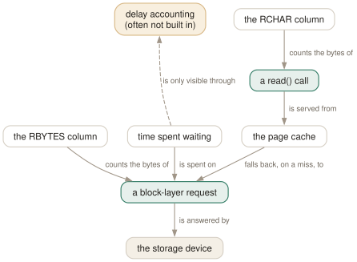

Day 12
I/O and delays
Bytes through the syscall, bytes off the disk, and the columns that say why a process is waiting.
By the end of today you can
- tell RCHAR from RBYTES from DISK READ, and pick the one that answers your question
- read the I/O priority column, and change it
- explain an N/A in the delay columns, and know what to use instead
Three ways to count a read
htop offers three families of I/O column and they measure at three different depths. Confusing them produces confident, wrong conclusions — most often “this process is hammering the disk” about a process that has not touched a disk in an hour.
RCHAR/WCHAR- Bytes through
read()andwrite(). What the program asked for. Cache hits count; awrite()counts the moment it returns, long before anything reaches a disk. RBYTES/WBYTES- Bytes that actually reached the block layer. What the device had to do.
IO_READ_RATE/IO_WRITE_RATE/IO_RATE- The same block-layer traffic as a rate, in bytes per second. Displayed as
DISK READ,DISK WRITEandDISK R/W.
The gap between the first two is the page cache, and reading it is a skill. 4 GB of RCHAR against 12 MB of RBYTES is a healthy machine serving a program from memory. The same two numbers close together means every read is missing cache — a working set that does not fit in RAM, which is a capacity problem rather than an application one.

RCHAR is what the program asked for; RBYTES is what the device had to supply. A large gap means caching is working; no gap means your working set does not fit in RAM. The dashed aspect is the part most builds cannot show you: attributing the waiting to a process needs delay accounting, and without it you fall back to the machine-wide PSI meters.The I/O screen, and rates versus totals
htop ships an I/O screen already configured, one Tab away. Its default column set leads with IO_RATE, which is right: totals since boot answer “has this ever done I/O”, and during an incident the question is always “is it doing I/O now”.
PID USER IO DISK READ DISK WRITE DISK R/W▽ IOD% SWPD% Command
4795 jhrcek B4 0.00 B/s 0.00 B/s 0.00 B/s N/A N/A gnome-keyring-daemon
5012 jhrcek B4 0.00 B/s 0.00 B/s 0.00 B/s N/A N/A gdm-wayland-session
1869 root B4 1.20 M/s 340.00 K/s 1.53 M/s N/A N/A dockerd
The IO column is IO_PRIORITY, and it packs a class and a number into three characters: R for realtime, B for best-effort, id for idle. B4 — best-effort, priority 4 — is what almost everything shows, because that is what the kernel derives from a nice value of zero.
Delay accounting: the columns that explain waiting
Three columns answer a question no other part of htop can: why is this process not getting anything done?
PERCENT_CPU_DELAY(CPUD%)- Share of time the process was runnable but not running. Pure CPU contention — it is ready and the scheduler is busy elsewhere.
PERCENT_IO_DELAY(IOD%)- Share of time blocked on synchronous block I/O. This is Day 2's
Dstate, quantified. PERCENT_SWAP_DELAY(SWAPD%)- Share of time waiting for pages to be swapped back in. On a machine with swap in use, the most important number on the screen.
Together they separate “needs more CPU” from “needs faster disks” from “needs more RAM”, which is normally an argument and here is a measurement.
What to use when the delay columns are N/A
Pressure Stall Information, from Day 8's meter list. Five meters — some cpu, some io, full io, full irq, some memory — reporting the share of time that some task, or every task, was stalled waiting for that resource.
PSI needs no capability and no build flag beyond a modern kernel. What you give up is attribution: it tells you the machine is stalling on I/O without telling you which process is responsible. In practice that is a smaller loss than it sounds, because once you know what the machine is waiting on, the I/O rate columns will usually tell you who.
The workflow is: PSI in the header to notice, the I/O screen's rate columns to attribute, and Day 7's l to find out which file or socket is actually involved.
Today's habit
Put a PSI meter in your header today and leave it there. Load average tells you how many things are queued, which has meant several different things over the years and is hard to interpret across machines. PSI tells you what fraction of wall-clock time something was stalled, which means one thing and is comparable between boxes.
Tomorrow: cgroups and containers — reading the ten shortening rules that turn a hundred-character path into eight characters.
New vocabulary
Options
| Option | Does |
|---|---|
RCHAR | Bytes the process has read through read(). Counts cache hits — most of this never touched a disk. |
WCHAR | Bytes written through write(). Counted when the call returns, not when the data lands. |
RBYTES | Bytes actually fetched from the block layer. Real disk reads. |
WBYTES | Bytes actually sent to the block layer. |
CNCLWB | Write bytes cancelled — dirtied, then truncated or deleted before writeback. |
IO_READ_RATE | Block-layer read rate. Shown as DISK READ. |
IO_WRITE_RATE | Block-layer write rate. Shown as DISK WRITE. |
IO_RATE | The two rates added. Shown as DISK R/W, and the right default sort for an I/O screen. |
IO_PRIORITY | Scheduling class and priority: R realtime, B best-effort, id idle. |
PERCENT_IO_DELAY | Share of time blocked on synchronous block I/O. Needs delay accounting. |
PERCENT_CPU_DELAY | Share of time runnable but not scheduled. The number that proves CPU contention. |
PERCENT_SWAP_DELAY | Share of time waiting for pages to swap back in. |
Today's configappend to ~/.config/htop/htoprc
Replace the shipped I/O screen with one that leads with rates rather than totals. Totals since boot answer 'has this process ever done I/O'; rates answer 'is it doing I/O now', which is the question you have during an incident. RCHAR sits at the end so the gap between it and the block-layer numbers stays visible -- that gap is the page cache doing its job.
screen:I/O=PID USER IO_PRIORITY IO_READ_RATE IO_WRITE_RATE IO_RATE PERCENT_IO_DELAY RCHAR Command
.sort_key=IO_RATE
.sort_direction=-1
htop reads this file once, at startup, and there is no reload key: quit and start it again. Note that htop rewrites the file — comments and all — on a clean exit from any session in which you changed a setting.
Drillsdo these in a real terminal, today
Self-check
Answer out loud first, then unfold.
A process shows 4 GB of RCHAR and 12 MB of RBYTES. Is it hammering the disk?
No — it is being served almost entirely by the page cache, which is the system working exactly as designed. RCHAR counts bytes the process asked for through read(); RBYTES counts bytes the block layer actually had to fetch. The 4 GB gap is memory, not disk.
Reverse the numbers and you have a problem: RBYTES approaching RCHAR means every read is missing cache and going to the device, which is what a working set larger than RAM looks like. The ratio between these two columns is more informative than either one alone, which is why an I/O screen should carry both.
Every delay column reads N/A on your machine. Whose fault is it and what do you do instead?
Nobody's, usually. The delay-accounting columns need two things: htop built with --enable-delayacct, which links against libnl-3 and libnl-genl-3, and the CAP_NET_ADMIN capability at runtime — the kernel exposes delay accounting over a netlink socket, which is why a memory statistic needs a networking privilege. Most distribution builds skip the flag.
The substitute is better than it sounds: the Pressure Stall Information meters from Day 8. PSI answers “is anything on this machine waiting on CPU, I/O or memory, and how much”, needs no capability, and is machine-wide rather than per-process. You lose the ability to attribute the stall to one process and keep the ability to detect it at all.
Two processes each show 0.0 in CPU% and the machine is loaded. One has a high CPUD% and the other a high IOD%. What is different about them?
Both are waiting, for entirely different reasons, and neither shows up in CPU% because waiting is not running. High PERCENT_CPU_DELAY means runnable but not scheduled — it is ready to work and the scheduler has not given it a core. That is CPU contention, and the fix is fewer competing processes or a nice value.
High PERCENT_IO_DELAY means blocked on synchronous block I/O — it is in Day 2's D state, waiting for a device. No amount of CPU will help; the fix is at the storage layer. These two columns are the difference between “buy more CPU” and “buy faster disks”, which is why they are worth the trouble of getting them working.
Why does htop offer both WCHAR and CNCLWB, and what does a large CNCLWB tell you?
WCHAR counts bytes handed to write(), which returns as soon as the data is in the page cache. CNCLWB counts bytes that were dirtied and then never written out — because the file was truncated or deleted before writeback happened.
A large CNCLWB is the signature of a program churning temporary files: write, use, delete, repeat. That is not necessarily wrong — compilers and build systems do it constantly — but it means the process's apparent write volume overstates what the disk ever had to do, and it is a hint that a tmpfs might remove the I/O entirely.
Cheat sheet
RCHAR / WCHAR bytes through read()/write() -- cache hits COUNT
RBYTES / WBYTES bytes that reached the block layer -- real disk
IO_READ_RATE DISK READ IO_WRITE_RATE DISK WRITE
IO_RATE DISK R/W -- the right default sort for an I/O screen
CNCLWB dirtied, then deleted before writeback (build systems)
RCHAR >> RBYTES -> page cache is working
RCHAR ~= RBYTES -> working set does not fit in RAM
IO column (IO_PRIORITY): R realtime B best-effort id idle
B4 is the default, derived from nice 0. Day 6's 'i' key changes it.
CPUD% runnable but not scheduled -> CPU contention
IOD% blocked on block I/O -> storage
SWPD% waiting on swap-in -> memory
all three N/A unless built --enable-delayacct AND you hold CAP_NET_ADMIN
substitute: the Pressure Stall Information meters (no privilege needed)
Everything through Day 12
Keys
| Key | Does |
|---|---|
| Ctrl-L | Redraw the screen and recalculate, without waiting for the next tick. |
| Z | Pause and resume sampling. The screen freezes; the machine does not. |
| F10q | Quit. This is also the only exit that saves your settings. |
| UpDown | Move the selection one row. Alt-k and Alt-j do the same. |
| PgUpPgDn | Move the selection a screenful at a time. |
| HomeEnd | Jump to the first or the last process in the list. |
| LeftRight | Scroll the whole list sideways. Also Alt-h and Alt-l. |
| Ctrl-A^ | Scroll back to the start of the selected process's line. |
| Ctrl-E$ | Scroll to the end of the selected process's line. |
| Alt-UpAlt-Down | Pan the view without moving the selection. Shift-Up/Shift-Down too, if your terminal lets them through. |
| p | Toggle full program paths in Command. |
| m | Toggle merging exe, comm and cmdline into Command. |
| F3/ | Incremental search: move the selection to the next match. Does not hide anything. |
| F3 | While searching: jump to the next match. Shift-F3 goes backwards. |
| F4\ | Incremental filter: hide every row that does not match. |
| Enter | In the filter prompt: keep the filter and put the prompt away. |
| Esc | In the filter prompt: clear the filter. In search: cancel it. |
| u | Open the user menu and show only one user's processes. |
| Digits | Type a PID and the selection jumps to it. Silently — there is no prompt. |
| F6><. | Open the “Sort by” menu. All three punctuation aliases work. |
| I | Invert the sort direction. The arrow in the heading flips. |
| NPMT | Sort by PID, CPU%, MEM% and TIME. The top(1) compatibility keys. |
| F5t | Toggle tree view. The F5 label changes to List while you are in it. |
| +- | Expand or collapse the selected subtree. |
| * | Expand or collapse every subtree at once. |
| F | Follow: pin the selection to this process wherever it moves. |
| Space | Tag or untag the selected process. Tagged rows stay tagged until you clear them. |
| c | Tag the selected process and all of its children. |
| U | Untag everything. The most important key on this page. |
| F9k | Open the signal menu. Defaults to 15 SIGTERM. |
| F7] | Raise priority — lower the nice value. Root only. |
| F8[ | Lower priority — raise the nice value. Anyone can do this to their own. |
| } | Raise the autogroup priority. Shift-F7. Root only. |
| { | Lower the autogroup priority. Shift-F8. |
| a | Set CPU affinity: tick the CPUs this process may run on. |
| i | Set the I/O scheduling class and priority. Not in the manual page. |
| Y | Set the scheduling policy. Not in the manual page either. |
| l | List open files, by running lsof against the selected process. |
| s | Trace system calls, by running strace against it. |
| e | Show the process's environment. Not in the manual page. |
| w | Show the command line wrapped across the whole screen. |
| x | Show the process's active file locks. |
| b | Show a backtrace. Only if htop was compiled with it, which it usually was not. |
| F5 | Refresh the open screen. F3 and F4 search and filter it. |
| F8 | In the strace screen: toggle auto-scroll. F9 stops the trace. |
| # | Hide and show the header meters entirely. Not in the manual page. |
| F2SC | Open Setup, where meters are chosen. C is an undocumented alias. |
| F2SC | Open Setup. C is an alias the manual page does not mention. |
| F10 | Leave Setup. Labelled Done. |
| Space | In Setup: toggle the highlighted option, or add the highlighted meter. |
| K | Hide or show kernel threads. Hidden by default. |
| H | Hide or show userland threads. Shown by default — this is why your list is so long. |
| Tab | Move to the next screen. Shift-Tab goes back. |
Commands
| Command | Does |
|---|---|
htop | Start htop, reading ~/.config/htop/htoprc once at startup. |
htop -d 10 | Sample every 10 tenths of a second. Clamped to the range 1–100. |
htop -n 5 | Draw five frames, then exit on its own. Absent from the manual page. |
htop -V | Print the version. The -v in the SYNOPSIS does not exist. |
htop -F chrome | Start with the filter already applied. Multiple terms: -F 'nginx|php'. |
htop -p 1,843 | Show only these PIDs, and nothing else ever appears. |
htop -u | Show only your own processes. |
htop -u postgres | Show one user's processes. A numeric UID works too. |
htop -s PERCENT_MEM | Start sorted by a column. Forces list view. |
htop -s PERCENT_MEM -t | Sorted and in tree view — the one way to have both. |
htop --sort-key help | Print every sortable column name and what it means. |
htop -t=soft | Tree view with a stable cursor line. classic, soft and hard, or 0/1/2. |
htop --readonly | Disable every process- and system-changing feature for this session. |
htop --no-meters | Start with the header hidden. Gives the process list the whole terminal. |
htop -C | Monochrome. The bar segments become bold, normal and dim instead of colours. |
htop -U | ASCII instead of unicode for the graph meters. |
HTOPRC=~/x htop | Read (and write) a different config file. One config per machine, one shared home directory. |
chmod 444 ~/.config/htop/htoprc | Make the file read-only. htop then runs normally and stops clobbering it. |
htop --sort-key help | The authoritative column list, straight from the binary. Better than the manual page. |
Options
| Option | Does |
|---|---|
delay | Tenths of a second between samples in htoprc. Default 15, i.e. 1.5 s. |
M_VIRT | Address space the process has mapped. VIRT. Mostly promises, not memory. |
M_RESIDENT | Pages actually in RAM, shared ones counted in full. RES. |
M_SHARE | The part of RES that other processes also map. SHR. |
M_PRIV | Resident minus shared — what dies with the process. PRIV, a default column. |
M_SWAP | Pages of this process pushed out to swap. SWAP. |
M_PSS | Resident, but each shared page divided by its number of sharers. PSS. |
M_PSSWP | The same proportional treatment for swapped-out pages. PSSWP. |
M_EPSS | PSS plus PSSWP: the whole footprint, proportionally. EPSS. |
PERCENT_MEM | RES as a share of total RAM. MEM% — and it inherits RES's double counting. |
detailed_cpu_time | Split the CPU bar into irq, soft-irq, steal, guest and io-wait. Default off. |
header_layout | One to four columns, in fourteen width presets. Default two_50_50. |
column_meters_0 | The meters in the first header column, space-separated. |
column_meter_modes_0 | Their display modes: 1 bar, 2 text, 3 graph, 4 LED. |
highlight_changes | Highlight processes that are new or whose command line changed. Default off. |
highlight_changes_delay_secs | How long that highlight lasts. Default 5. |
enable_mouse | Let htop capture mouse events. Default on, which costs you terminal text selection. |
header_margin | Leave a blank line around the header. Default on. |
screen_tabs | Show the names of screen tabs above the list. Default on. |
fields | The legacy numeric column list. Silently overrides every screen: line. |
NLWP | How many threads this process has. The cheapest way to spot a thread pool. |
TGID | Thread group id — a thread's process. Equals PID for a process. |
STARTTIME | Wall-clock time the process started. Shown as START. |
ELAPSED | How long it has been running. Undocumented in the manual page. |
OOM | The OOM killer's score for this process. Who dies first under memory pressure. |
CTXT | Context switches counted over the refresh interval. A rate, not a lifetime total. |
PROCESSOR | Which CPU it last ran on. Shown as CPU. |
SCHEDULERPOLICY | The scheduling policy from Day 6's Y dialog. Undocumented in the manual page. |
SECATTR | The SELinux or AppArmor label. Undocumented, and very wide. |
show_thread_names | Show each thread's own name rather than its process's command. Default off. |
highlight_threads | Draw thread rows in a different colour. Default on. |
screen:NAME | Define a screen and its columns, in order, space-separated. |
.sort_key | The sort column for the screen defined immediately above. |
.sort_direction | -1 for descending, 1 for ascending. |
.tree_view | Whether this screen starts in tree view. Per-screen, like everything dotted. |
RCHAR | Bytes the process has read through read(). Counts cache hits — most of this never touched a disk. |
WCHAR | Bytes written through write(). Counted when the call returns, not when the data lands. |
RBYTES | Bytes actually fetched from the block layer. Real disk reads. |
WBYTES | Bytes actually sent to the block layer. |
CNCLWB | Write bytes cancelled — dirtied, then truncated or deleted before writeback. |
IO_READ_RATE | Block-layer read rate. Shown as DISK READ. |
IO_WRITE_RATE | Block-layer write rate. Shown as DISK WRITE. |
IO_RATE | The two rates added. Shown as DISK R/W, and the right default sort for an I/O screen. |
IO_PRIORITY | Scheduling class and priority: R realtime, B best-effort, id idle. |
PERCENT_IO_DELAY | Share of time blocked on synchronous block I/O. Needs delay accounting. |
PERCENT_CPU_DELAY | Share of time runnable but not scheduled. The number that proves CPU contention. |
PERCENT_SWAP_DELAY | Share of time waiting for pages to swap back in. |